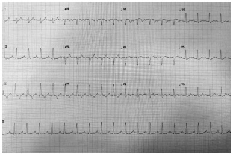
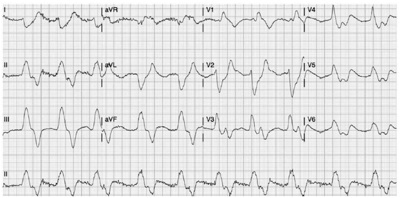

Questão 1 · Letalidade · 4000170002Num município hipotético, com população de 100000 pessoas, foram diagnosticados, ao longo de um ano, 10 casos de câncer de colo de útero, sendo que 2 desses evoluíram para óbito. Para esse período, calcule os coe cientes para câncer de colo de útero solicitados nas questões seguintes. O coeficiente de letalidade é
A igual a 0,2%.
B igual a 2%.
C igual a 10%.
D igual a 20%.
E impossível de ser calculado com os dados fornecidos.
Revisar: possível letra faltando em enunciado
Questão 2 · Mortalidade Específ ica · 4000170001Num município hipotético, com população de 100000 pessoas, foram diagnosticados, ao longo de um ano, 10 casos de câncer de colo de útero, sendo que 2 desses evoluíram para óbito. Para esse período, calcule os coe cientes para câncer de colo de útero solicitados nas questões seguintes. O coeficiente de mortalidade é
A igual a 10.
B igual a 10%.
C igual a 10 por 100000.
D igual a 20 por 100000.
E impossível de ser calculado com os dados fornecidos.
Revisar: possível letra faltando em enunciado
Questão 3 · Medicina Preventiva · 4000170000De acordo com a Política Nacional de Atenção Básica, do Ministério da Saúde, é atribuição específica do médico
A planejar, gerenciar e avaliar as ações desenvolvidas pelos agentes comunitários de saúde, em conjunto com os outros membros da equipe.
B cadastrar todas as pessoas de sua microárea e manter os cadastros atualizados.
C realizar consultas clínicas, pequenos procedimentos cirúrgicos e, quando necessário, atividades em espaços comunitários, como escolas, associações etc.
D realizar o cuidado da saúde da população adscrita, prioritariamente no âmbito da unidade de saúde.
E participar do processo de territorialização e mapea mento da área de atuação da equipe.
Questão 4 · Vacina BCG · 4000169999O Calendário Nacional de Vacinação orienta para que a vacina BCG seja aplicada em crianças,
A em dose única, ao nascer.
B em dose única, aos 30 dias de vida.
C em dose dupla, ao nascer e após 1 mês da primeira dose.
D em dose dupla, com 1 mês e com 3 meses de idade.
E somente em comunidades com casos de tuberculose prevalentes.
Questão 5 · Sistema de Inf ormação de Agravos de Notif icação SINAN · 4000169998Quando a periodicidade para a noti cação de um agravo de noti cação compulsória é “imediata”, a noti cação deve ser feita em até
A 12 horas.
B 24 horas.
C 1 dia útil.
D 1 semana.
E 1 mês.
Questão 6 · Ref orma Psiquiátrica e Psiquiatria Social · A Saúde Mental no Brasil · Ref orma Psiquiátrica Brasileira · 4000169997A política de saúde mental brasileira, resultado da mobilização de usuários, familiares e trabalhadores da Saúde, iniciada na década de 1980,
A foi inspirada no modelo francês, proposto e defendido pelo médico psiquiatra Christophe Dejours.
B defende a luta antimanicomial, que contraindica a internação hospitalar por motivos psiquiátricos em qualquer situação.
C parte do pressuposto de que a maioria das pessoas, mesmo sem se dar conta, enxerga o mundo a partir de uma integração total entre a mente e o corpo, de forma que um não se separa do outro de modo algum.
D determina que, em caso de internação psiquiátrica voluntária, ela poderá ser encerrada por solicitação escrita do paciente ou por determinação do médico assistente.
E restringe o atendimento nos Centros de Atenção Psicossocial (CAPS) às pessoas com transtornos mentais leves ou moderados.
Questão 7 · Lista Nacional de Notif icação Compulsória de doenças agravos e eventos de saúde pública · 4000169996Uma pessoa contraiu febre tifoide e veio a falecer em decorrência de peritonite causada por perfuração intestinal. No preenchimento da Declaração de Óbito, os eventos que se referem, respectivamente, às causas básica, intermediária e imediata são:
A febre tifoide, perfuração intestinal e peritonite.
B peritonite, perfuração intestinal e febre tifoide.
C febre tifoide, peritonite e perfuração intestinal.
D perfuração intestinal, febre tifoide e peritonite.
E peritonite, febre tifoide e perfuração intestinal.
Questão 8 · Medicina Preventiva · Atenção Primária à Saúde APS no Brasil · 4000169995De acordo com as orientações do Ministério da Saúde para a implantação das Unidades de Saúde da Família, é correto afirmar que
A ela foi prejudicada com a publicação da Norma Operacional Básica do Sistema Único de Saúde, a NOB-SUS 96.
B elas constituem uma proposta marginal ao modelo já existente desde o início do SUS.
C a atuação tradicional do setor saúde sempre conduziu à compreensão do indivíduo de forma isolada de seu contexto familiar e dos valores socioculturais.
D a implantação do Programa Saúde da Família (PSF) exige a ruptura abrupta com a lógica de atuação anterior.
E é recomendável que a Equipe de Saúde da Família (ESF) seja composta, no máximo, por um médico, um enfermeiro, dois auxiliares de enfermagem e seis agentes comunitários de saúde.
Questão 9 · Curvas de Nelson de Moraes · Razão de Mortalidade Proporcional RMP ou Índice de SwaroopUemura · 4000169994Indicadores de Mortalidade Proporcional por Idade O Índice de Swaroop & Uemura e as Curvas de Moraes calculam o número de mortes por
A grupo etário.
B condição socioeconômica.
C doenças crônico degenerativas.
D doenças infectocontagiosas.
E sexo.
Questão 10 · Odds Ratio ou Razão de Chances · 4000169993Se num estudo do tipo caso-controle envolvendo 30 pessoas, com igual número de casos e de controles, tivesse sido observado que, dentre os doentes, 10 haviam sido expostos ao fator de risco e que, dentre os não doentes, um terço havia sido exposto, o valor aproximado do risco relativo (odds ratio) seria
A igual a 2.
B igual a 5.
C igual a 4.
D igual a 10.
E impossível de ser calculado com os dados fornecidos.
Questão 11 · Risco Relativo RR Razão de Riscos · 4000169992Num hipotético estudo de coorte, foram acompanhadas, durante um período, 15 pessoas expostas ao fator de risco, sendo que, dessas, dois terços ficaram doentes e o restante não. No grupo controle, 5 adoeceram e 10 não. O risco relativo é
A igual a 2.
B igual a 5.
C igual a 4.
D igual a 10.
E impossível de ser calculado com os dados fornecidos.
Questão 12 · Política Nacional de Humanização · 4000169991O texto a seguir é um trecho de artigo escrito por Júlio Lanceloti para o “Manual sobre o cuidado à saúde junto à população em situação de rua”, da série “Normas e Manuais Técnicos”, do Ministério da Saúde. Estabelecer vínculos é uma aprendizagem possível e uma dimensão humana que podemos desenvolver.Alguns pressupostos são necessários: o despojamento e a empatia, a capacidade de compreender sem julgar e o respeito, que estabelece limites. Com base no texto, é correto afirmar que
A o estabelecimento de vínculos é inato à natureza humana.
B é importante estabelecer limites entre o saber técnico e o popular.
C um dos pressupostos para o estabelecimento de vínculos é ter a habilidade de imaginar-se no lugar de outra pessoa.
D o estabelecimento de vínculos só é possível se ensinado nas escolas.
E o correto julgamento das situações é condição para sua boa compreensão.
Questão 13 · Testes Diagnósticos · 4000169990Ao se propor determinado tipo de teste para uma doença cuja letalidade é alta, mas que diminui de maneira significativa quando tratada precocemente, é importante que ele tenha alto(a)
A valor preditivo negativo (VPN).
B conegatividade.
C reprodutibilidade.
D especificidade.
E sensibilidade.
Questão 14 · Medicina Preventiva · 4000169989Visando ao estudo de prevalência e evolução da disseminação da epidemia de Covid-19 num determinado município, é recomendado que sejam realizados(as)
A inquéritos populacionais por meio da aplicação de questionários sobre o estado atual de saúde da população e os antecedentes relacionados à doença.
B consultas médicas com os munícipes de faixa etária mais alta, pois esses fazem parte da população mais vulnerável.
C testes tipo RT-PCR, pois são os que identificam a presença do RNA do vírus, confirmando ou não a infecção.
D testes sorológicos, pois os anticorpos da classe IgM indicam uma infecção recente e os da classe IgG indicam infecção pregressa.
E testes sorológicos, pois os anticorpos da classe IgG indicam uma infecção recente e os da classe IgM indicam infecção pregressa.
Questão 15 · Processo saúdedoença · 4000169988Em 1920, Winslow, antigo professor de saúde pública da Universidade de Yale, apresentou a seguinte definição de saúde pública: Saúde Pública é a ciência e a arte de evitar doenças, prolongar a vida e desenvolver a saúde física, mental e a e ciência, através de esforços organizados da comunidade para o saneamento do meio ambiente, o controle de infecções na comunidade, a organização de serviços médicos e paramédicos para o diagnóstico precoce e o tratamento preventivo de doenças e o aperfeiçoamento da máquina social que irá assegurar a cada indivíduo, dentro da comunidade, um padrão de vida adequado à manutenção da saúde. É correto afirmar, com base nesse texto, que
A esses são conceitos muito antigos e totalmente desatualizados quando se pensa em saúde pública nos dias atuais.
B é destacado o papel dos médicos como principais responsáveis das equipes multidisciplinares de saúde.
C é mencionada a importância da prevenção secundária.
D são consideradas apenas as doenças infecciosas como objetivo da saúde pública.
E o principal objetivo da saúde pública é a organização eficiente dos serviços de assistência à saúde.
Questão 16 · Política Nacional de Humanização · 4000169987De acordo com a Política Nacional de Humanização (HUMANIZASUS), o conceito de “clínica ampliada” refere-se
A à integração da equipe de trabalhadores da saúde de diferentes áreas na busca de cuidado e tratamento de acordo com cada caso, com a criação de vínculo com o usuário.
B à inclusão de práticas consideradas alternativas e que fogem do padrão habitual da assistência prestada aos usuários do SUS.
C à integração das ações de assistência clínica e cirúrgica com as de vigilância em saúde.
D a não limitar a oferta de assistência aos marcos geográficos formalmente estabelecidos na organização dos serviços de saúde.
E a entender as ações de assistência à população migrante de outras regiões do Brasil ou oriunda de outros países.
Questão 17 · História do Sistema Único de Saúde SUS · 4000169986É correto afirmar que
A com a chegada da família real ao Brasil, iniciou-se a fundação de faculdades de medicina no país e melhora da situação sanitária, sobretudo nos rincões mais distantes do interior brasileiro.
B o Brasil é o único país capitalista do mundo que possui um sistema de saúde pública universal financiado pelo Estado.
C o Instituto Nacional de Assistência Médica da Previdência Social (INAMPS) foi criado em 1977, como uma autarquia federal vinculada ao Ministério da Saúde, numa tentativa de dar resposta às necessi dades de saúde das parcelas mais vulneráveis da população.
D a chamada “Revolta da Vacina” ocorreu em 1904, no Rio de Janeiro, então capital do país, e foi motivada pela obrigatoriedade da vacina contra a varíola e também por outras causas, como as reformas urbanas e as campanhas de saneamento.
E a 8ª Conferência Nacional de Saúde, realizada entre 17 e 21 de março de 1986, foi um dos momentos mais importantes da história da saúde pública em nosso país, pois, durante sua realização, foi instituído o Sistema Único de Saúde (SUS).
Questão 18 · Princípios e Diretrizes do SUS na Lei n 80801990 · 4000169985O conjunto articulado e contínuo das ações e serviços preventivos e curativos, individuais e coletivos, exigidos para cada caso em todos os níveis de complexidade do sistema refere-se a um dos princípios do Sistema Único de Saúde (SUS). Trata-se do princípio da
A universalidade de acesso aos serviços de saúde em todos os níveis de assistência.
B preservação da autonomia das pessoas na defesa de sua integridade física e moral.
C igualdade da assistência à saúde, sem preconceitos ou privilégios de qualquer espécie.
D conjugação dos recursos financeiros, tecnológicos, materiais e humanos dos diferentes entes governamentais.
E integralidade de assistência.
Questão 19 · Princípios e Diretrizes do SUS na Lei n 80801990 · Bases legais de Saúde do Trabalhador · 4000169984Ainda de acordo com a lei referida na questão anterior, entende-se por saúde do trabalhador um conjunto de atividades que se destina à promoção e à proteção da saúde dos trabalhadores, abrangendo, dentre outras,
A a assistência ao trabalhador, exclusivamente com relação às doenças profissionais e do trabalho.
B a participação, no âmbito dos diferentes ministérios, em estudos, pesquisas, avaliação e controle dos riscos e agravos potenciais à saúde existentes no processo de trabalho.
C o fornecimento de informação ao trabalhador e à sua respectiva entidade sindical sobre os resultados de fiscalizações, avaliações ambientais e exames de saúde, de admissão, periódicos e de demissão, respeitados os preceitos da ética profissional.
D a revisão periódica da listagem oficial de doenças originadas no processo de trabalho, tendo na sua elaboração a colaboração das entidades acadêmicas de ensino e pesquisa.
E a elaboração de normas regulamentadoras de medicina e segurança do trabalho (NR) a serem fiscalizadas pela auditoria fiscal do trabalho.
Questão 20 · Lei n 80801990 · 4000169983A Lei nº 8.080/1990, um dos principais diplomas legais da área da saúde, estabelece que
A a saúde é um direito fundamental dos cidadãos e ci dadãs brasileiros, devendo o Estado prover as condições indispensáveis ao seu pleno exercício.
B o dever do Estado de garantir a saúde não exclui o das pessoas, da família, das empresas e da sociedade.
C a saúde tem como fatores determinantes e condicionantes, entre outros, o transporte e a segurança pública.
D o dever do Estado de garantir a saúde consiste na formulação e na execução de políticas assistenciais (ambulatoriais e hospitalares) e de saneamento.
E é vedada à iniciativa privada participar do Sistema Único de Saúde (SUS), mesmo que em caráter complementar.
Questão 21 · Obstetrícia · Eclâmpsia · 4000169982Com relação à utilização de sulfato de magnésio em obstetrícia, é correto se afirmar que
A deverá ser por infusão endovenosa em casos de necessidade de transporte da gestante para referência.
B para se diagnosticar a intoxicação, os parâmetros a serem avaliados são PA, temperatura, pulso e diurese.
C em caso de creatinina elevada, recomenda-se aumentar a dose do sulfato para obter o resultado esperado.
D nos casos em que não houve convulsão, mantém-se até 24 horas após a resolução do caso.
E nos casos de neuroproteção fetal, deve ser mantido por 24 horas antes da resolução do caso.
Questão 22 · Ginecologia · Psicológicas · 4000169981As mulheres no climatério são altamente suscetíveis para depressão. Quais dos sintomas que mais se associam a esse quadro?
A Fogachos.
B Sintomas cardiovasculares.
C Sintomas dispépticos.
D Sintomas urológicos.
E Sintomas respiratórios.
Questão 23 · Obstetrícia · Pósdatismo · 4000169980Se uma gestante ultrapassa a data provável do parto, é correto afirmar que
A não se deve permitir associar esta ocorrência a situações em que possa coexistir insuficiência placentária.
B pode ultrapassar até as 42 semanas, desde que o seguimento seja feito com ultrassonografias.
C o seguimento deve ser a cada semana avaliando líquido e cardiotocografia.
D se deve fazer dopplervelocimetria a cada 3 dias até atingir as 42 semanas.
E se deve fazer amniocentese para pesquisa de mecô-nio com 41 semanas.
Questão 24 · Hemorragias pós parto HPP e rotura uterina · Obstetrícia · 4000169979Dentre as hemorragias no pós-parto (HPP), está uma das grandes causas de morte materna que tem justi cado uma campanha para que se atinja ZERO mortes maternas. Assinale a alternativa na qual constam fatores determinantes de hemorragia no pós-parto.
A trabalho de parto prolongado – atonia – pré-eclâmpsia.
B diabetes – isoimunização – trabalho de parto taquitócico.
C feto macrossômico – polidrâmnio – trabalho de parto taquitócico.
D anemia – trabalho de parto prolongado – polidramnio.
E rotura prematura de membranas – trabalho de parto prolongado – macrossomia fetal.
Revisar: possível letra faltando em enunciado
Questão 25 · Assistencia ao parto pélvico · Obstetrícia · 4000169978Se no trabalho de parto o feto se encontra há 15 minutos em OET no plano +2 para +3 de De Lee com colo totalmente dilatado, podemos afirmar que
A a gestante se encontra no terceiro período do parto.
B está no período expulsivo, porém com uma distócia de rotação, pois o feto está em OET.
C poderia ser realizado um fórcipe para se abreviar esse período, e o adequado a ser aplicado é o fórcipe de Simpson Braun.
D se for aplicar um fórcipe para se promover a rotação, essa deverá ser de 90 graus.
E para facilitar o parto, deverá ser rodada a apresentação para OS.
Questão 26 · Rotura prematura de membranas ovulares RPM · 4000169977Se uma gestante com 29 semanas chega no PS com queixa de perda de líquido, sem outros sintomas, é correto que
A se a dinâmica uterina for negativa, deve-se avaliar o colo e, se for impérvio, a conduta é expectante.
B se a dinâmica uterina for negativa e a avaliação de infecção for negativa, tanto clínica quanto laboratorial, deve-se introduzir antibiótico para prevenção de infecção neonatal pelo estreptococos beta-hemolítico.
C se usa antibiótico para aumentar o período de latência e se prescreve corticoide para melhora a maturidade pulmonar se ocorrer o parto.
D se entrar em trabalho de parto, se deve inibi-lo com uterolítico, entrar com antibiótico e prescrever corticoide.
E que o parto deve ser programado para alguns dias, evitando-se permanecer com rotura por muito tempo, o que pode determinar infecção fetal e materna.
Questão 27 · Obstetrícia · Doença hemolítica perinatal DHPN · 4000169976Paciente II gesta I para interna em trabalho de parto. Na internação da maternidade, fez o exame de tipagem sanguínea que revelou que a gestante é AB negativo e o teste de Coombs Indireto foi positivo, embora no início do pré-natal fosse negativo. Frente a esse resultado, é correto que:
A ela está sensibilizada e não há o que ser feito.
B se a gestante recebeu imunoglobulina anti Rh na gestação, saber em que idade gestacional foi feito, pois pode ser devido a isso que o resultado está positivo.
C mesmo que a gestante tivesse recebido Imunoglobulina anti-Rh, o Coombs indireto não poderia ser positivo, e sim o Coombs direto.
D essa gestante não poderia receber imunoglobulina anti-Rh, pois ela era Rh negativo.
E sendo AB negativo, se o marido fosse O positivo, não haveria necessidade de imunoglobulina, pois existe incompatibilidade ABO.
Questão 28 · Sif ilis na gestação · Obstetrícia · 4000169975Gestante na UBS faz teste rápido para HIV e Sí lis. O teste de HIV veio negativo e o de sí lis deu positivo. Frente a esse resultado, é correto
A pedir VDRL e FTA-Abs e aguardar os resultados.
B receitar esquema de Benzetacil imediatamente para a gestante e seu companheiro.
C receitar esquema de Benzetacil imediatamente e convocar o companheiro para vir colher os exames.
D se a gestante referir alergia ao Benzetacil, receitar o esquema alternativo com eritromicina.
E que, se for tratada adequadamente, não há necessidade de se repetir a sorologia no terceiro trimestre.
Questão 29 · Obstetrícia · Eclâmpsia · 4000169974Uma gestante primigesta, no pré-natal de risco habitual, ao completar 33 semanas (compatível com USG precoce), procura o hospital e interna com queixas de cefaleia e escotomas, PA de 160 x 120 mmHg, AU de 29 cm. Frente a esses dados, é correto
A proceder a sulfatação, avaliar a necessidade de hidralazina e preparar para cesárea.
B prescrever hidralazina e corticoide e aguardar 34 semanas para interrupção.
C prescrever hidralazina e corticoide e aguardar 48 horas para interrupção.
D prescrever hipotensor, corticoide, sulfato para neuroproteção e induzir o parto.
E indicar cesárea imediatamente.
Questão 30 · Complicações f etais · Diagnóstico · 4000169973Entre as intercorrências clínicas na gestação, o diabetes tem um papel importante, seja pela incidência ou pelas possíveis repercussões. Em relação a essa doença, é correto afirmar que
A o diabetes gestacional é a principal causa de malformações fetais.
B a gestante com glicemia de 94 na primeira consulta deve fazer teste de sobrecarga à glicose na 24ª semana.
C se fizer teste de tolerância à glicose e tiver somente um valor alterado deverá repeti-lo.
D se a glicemia de jejum for de 126 mg ou mais na gestação será considerada como portadora de
E o rastreamento do diabetes gestacional deverá ser feito nas gestantes que possuam fatores de risco.
Questão 31 · Assistência prénatal · Obstetrícia · 4000169972No acompanhamento da assistência pré-natal, vários elementos são importantes. Assinale a alternativa correta.
A O útero deve ter seu crescimento mês a mês, e sua medida em centímetros deve corresponder à idade gestacional em semanas, de forma que com 6 semanas deve medir 6 cm acima da sínfise púbica, 10 semanas – 10 cm; 18 semanas – 18 cm; 25 semanas – 25 cm; 35 semanas – 35 cm; 40 semanas – 40 cm.
B O foco corresponde ao local de maior audibilidade dos batimentos cardíacos fetais, assim, num feto em OEA, o foco deverá estar do lado direito, onde está o dorso.
C A ausculta dos batimentos cardíacos fetais no consultório com sonar doppler é possível a partir de 6,2 semanas.
D A percepção dos movimentos fetais é um sinal de vitalidade fetal e é perceptível pelas gestantes a partir de 10 semanas.
E A frequência cardíaca fetal que auscultamos no pré-natal tem uma variação de 110 a 160 batimentos por minuto, podendo, em caso de muita movimentação fetal, ultrapassar esse limite.
Questão 32 · Assistência prénatal · Obstetrícia · 4000169971Uma mulher de 23 anos refere que o primeiro dia de sua última menstruação normal foi dia 25/11/2021. Seus ciclos menstruais eram normais com duração de 3 dias e intervalo de 28 dias. Não fazia uso de métodos contraceptivos. Fez exame de sangue que confirmou gestação. Hoje, sendo dia 10/01/2022, é correto afirmar que
A a DPP é dia 02/08/2022.
B está com atraso menstrual de 17 dias, e não é possível ainda visibilizar o embrião pela ultrassonografia transvaginal.
C a idade gestacional é de 6 4/7 semanas, e já se pode visualizar e ouvir os batimentos cardíacos fetais pela ultrassonografia com doppler transvaginal.
D o teste de gravidez só poderia ser positivo após 25/12/2021, quando teria 1 mês da última menstruação, portanto, deve ter engravidado antes.
E o teste de gravidez só poderia ser positivo após 10/01/2022, quando teria 15 dias do atraso.
Questão 33 · Populaçãoalvo e intervalo · 4000169970Mulher com 35 anos, III gesta III para, portadora de metrorragia por miomatose, sempre apresentou colpocitologia oncologia negativa e teve indicada histerectomia total, e a peça cirúrgica confirmou esse diagnóstico. Quanto aos exames preventivos a serem realizados a partir da cirurgia,
A devem continuar a ser anuais.
B devem ser realizados a cada 5 anos.
C devem ser a cada 3 anos.
D podem ser dispensados.
E devem ser complementados com colposcopia.
Questão 34 · Contraindicações · 4000169969Mulher procura o ambulatório de planejamento familiar, pois deseja inserir DIU de cobre. Assinale qual das condições listadas seria contraindicação dessa aplicação.
A NIC II de colo do útero.
B Recém-operada de Ca de mama.
C Portadora de mioma submucoso.
D Nuliparidade.
E Hipotireóidea em terapêutica com tiroxina.
Questão 35 · Ginecologia · Farmacológicos · 4000169968Mulher com 70 anos apresenta queixa de urgência urinária, súbita, intempestiva, e a urina sai sem conseguir controlar. Provavelmente se
A deve a colpocistoretocele.
B beneficiaria com oxibutinina e terapia comportamental.
C trata de vaginite atrófica.
D deve à incontinência de esforço.
E deve indicar cirurgia de TVT.
Questão 36 · Ginecologia · Ciclo menstrual · 4000169967Conhecer o processo de ovulação é importante para se acompanhar casos de infertilidade e poder orientar o casal e as avaliações a serem feitas. Assim, é correto afirmar que
A os picos das gonadotrofinas estão vinculados ao pico do estradiol para determinar a ovulação.
B a ovulação ocorre 24 a 36 horas após o pico de FSH e 48 horas após o pico do LH.
C a ovulação ocorre de 24 a 36 horas após o pico de estradiol e de 10 a 12 horas após o pico do LH.
D a progesterona apresenta seu pico no momento da postura ovular.
E o corpo lúteo se forma após a fecundação.
Questão 37 · Cirúrgico · Ginecologia · 4000169966Uma mulher com 59 anos, viúva há 3 anos e menopausada há sete, vai à UBS e se queixa de sensação de peso no períneo. Ao exame, constata-se prolapso genital, estadimento IV. Não apresenta comorbidades, nenhuma outra queixa e não faz uso de nenhuma medicação. Qual deve ser a conduta?
A Estrogenioterapia por via oral associada com progestágeno.
B Estrogenioterapia isolada por via tópica vaginal.
C Fisioterapia de assoalho pélvico.
D Cirurgia de amputação de colo.
E Histerectomia vaginal.
Questão 38 · Causas f uncionais · Ginecologia · 4000169965Mulher com 30 anos, I gesta I para, parto cesárea há 8 anos, vida sexual normal, vem apresentando diminuição do uxo menstrual há 1 ano e parou de menstruar há 8 meses. Ao exame clínico, tem vagina hipotró ca. Fez beta-hCG que foi negativo, FSH e LH baixos, PRL normal. Frente a esse quadro clínico e laboratorial, o diagnóstico é
A menopausa precoce.
B hipogonadismo hipergonadotrófico.
C hipogonadismo hipogonadotrófico.
D síndrome de Asherman.
E SOP (síndrome dos ovários policísticos).
Revisar: possível letra faltando em enunciado
Questão 39 · Tricomoníase · Ginecologia · 4000169964Mulher procura o médico da UBS com queixa de corrimento vaginal amarelado, com odor fétido, que traz a sensação de queimação, disúria e, às vezes, dor na relação sexual. No exame especular, além do conteúdo vaginal, observa-se lesões puntiformes no colo. Frente a essa infeção, a terapêutica indicada é
A penicilina benzatina.
B azitromicina.
C metronidazol.
D miconazol.
E nistatina.
Questão 40 · Fatores de risco · 4000169963Quando uma mulher consulta seu ginecologista, alguns dados da anamnese podem ser identi cados como indicativos de maior risco para câncer de mama.Assinale a alternativa que apresenta a condição que mais tem relação com essa doença.
A Nuliparidade.
B Uso de contraceptivo oral.
C Menarca precoce.
D Menarca tardia.
E Amamentação prolongada.
Questão 41 · Retinopatia da Prematuridade · 4000169962Na retinopatia da prematuridade, a cegueira decorre
A da inflamação do segmento anterior do olho.
B da isquemia do segmento anterior com consequente atrofia.
C do descolamento ou hemorragia da coroide.
D da rotura da retina.
E do descolamento da retina.
Questão 42 · Tratamento Geral · 4000169961Menino, 2 anos de idade, apresenta febre há 2 dias. Há 1 dia, queixa-se de dor, que a mãe considera que seja abdominal; aceita líquidos, mas recusa as refeições. Tem diurese clara e não evacuou hoje. Ao exame, está prostrado, hidratado, com FC = 110 bpm, FR = 50 mrm, saturação de oxigênio de 92 %. Tem tiragem intercostal e de fúrcula, ausculta pulmonar com estertores nos difusos e diminuição de murmúrio vesicular em base direita. O fígado e o baço são palpáveis nos rebordos costais. Há cicatrizes, manchas róseas, brancas e pigmentadas em torno da boca e entre nariz e boca. A mãe refere que havia muitas crostas nessa região e as retirou com óleo, como foi orientado na consulta médica. Na radiogra a de tórax, há focos de consolidação em lobos superiores direito e esquerdo e linha de derrame pleural à direita. A melhor conduta para o quadro apresentado é:
A internação hospitalar, oferta de oxigênio por cateter nasal e administração de penicilina cristalina e amicacina.
B internação hospitalar e administração de oxacilina.
C internação hospitalar para punção do derrame pleural, guiada por ultrassom, e administração de amoxicilina.
D administração de amoxicilina-clavulonato e orientação de retorno para reavaliação em 24 horas.
E administração de amoxicilina e azitromicina e orientação de retorno para reavaliação em 48 horas.
Questão 43 · Suporte transf usional na anemia f alcif orme · Irradiação · 4000169960Menino, 10 anos de idade, tem anemia falciforme e deve realizar, em até 5 dias, cirurgia para drenagem biliar e colecistectomia sob anestesia geral. No pré-operatório, tem Hb 9,9 g /dL e porcentagem de hemoglobina S de 70%. Os procedimentos corretos para a realização da cirurgia devem incluir
A transfusão de concentrado de hemácias irradiado.
B transfusão de concentrado de hemácias filtrado e irradiado.
C reserva cirúrgica de hemocomponentes fenotipados, filtrados e irradiados.
D exsanguineotransfusão parcial.
E iniciar a administração de hidroxiureia.
Questão 44 · Imunodef iciências primárias · Inf ectologia · 4000169959Menino, 4 meses de idade, nascido a termo por parto normal, com peso de 3100 g e peso atual de 4050 g, é internado com quadro de meningite meningocócica. Tem dermatite seborreica em couro cabeludo e erupção eritemato-descamativa em todo o corpo, desde o nascimento; já realizou tratamento várias vezes com melhora transitória. A mãe refere que esta é a segunda internação. Aos 2 meses de idade, cou internado por diarreia e necessitou ser transferido para a unidade de terapia intensiva comdiagnóstico de sepse por Salmonella sp. É realizada, corretamente, a hipótese diagnóstica de
A erro inato do metabolismo.
B imunodeficiência primária.
C deficiência de zinco.
D psoríase familiar primária.
E fibrose cística.
Questão 45 · Diagnóstico · 4000169958Menino, 14 anos de idade, realiza hemodiálise em aguardo de transplante renal. Na radiogra a de tórax, tem calci cação isolada em lobo superior direito. Para diagnóstico de infecção latente por tuberculose, deve realizar
A prova tuberculínica.
B cultura de lavado brônquico.
C teste rápido molecular em lavado gástrico.
D tomografia de tórax.
E biopsia pleural.
Questão 46 · Tratamento · 4000169957Menino, 6 meses de idade, apresenta picos febris medidos entre 38 e 38,5 ºC há 2 dias, sem outros sintomas. Ao exame, está afebril, em bom estado geral e com exame físico normal. Foi realizado o teste rápido com ta (dipstick) em urina colhida por saco coletor, com resultado negativo para leucocituria e nitrito. A conduta indicada para o quadro apresentado é:
A orientação para medicação da febre e retorno para avaliação se a febre persistir nas próximas 48 horas ou surgirem sintomas.
B coleta de urina por cateterismo vesical para urinálise.
C coleta de urina por cateterismo vesical para uninálise e urocultura.
D coleta de urina por punção suprapúbica para urinálise e urocultura com antibiograma.
E agendamento de ultrassonografia de rins e vias urinárias.
Questão 47 · Contraindicações · 4000169956Casal de missionários que vai trabalhar no interior de Angola vem ao atendimento para vacinação em seu primeiro lho, que tem 4 meses e 15 dias de idade. A criança recebeu as vacinas do calendário nas datas adequadas, e os pais também atualizaram as suas vacinas, no período das consultas do pré-natal, e contra covid-19, segundo as orientações, mas não receberam vacina para febre amarela. A mãe recebeu a segunda dose contra covid-19 há 2 meses. A conduta indicada para a família é vacinar
A os pais e a criança contra febre amarela.
B os pais e a criança contra febre amarela e vacina polissacarídea contra febre tifoide.
C os pais contra febre amarela, e a criança, contra sarampo.
D os pais contra febre amarela, e a criança, contra hepatite A.
E o pai contra febre amarela.
Questão 48 · Clínica Médica · Hepatite Fulminante Insuf iciência Hepática Aguda · Hepatologia · 4000169955Adolescente internado com diagnóstico de dengue, somente poderá ter também diagnóstico de insu ciência hepática aguda se apresentar
A doença hepática prévia.
B coagulopatia não corrigível pela administação de vitamina K e RNI >2, na ausência de encefalopatia.
C ascite e hiperamonemia.
D comprometimento da função renal com necessidade de terapia de substituição renal.
E icterícia, coagulopatia e RNI >1.
Questão 49 · Síndrome de GuillainBarré · Neurologia · Exames Complementares · 4000169954Menino, 7 anos de idade, saudável, queixa-se de dor nas pernas há 6 dias e, há 5 dias, tem di culdade para pular e andar. A cada dia, tem maior dificuldade para andar. Há 3 semanas, apresentou diarreia por 5 dias, com febre nos 2 primeiros dias. Ao exame, tem perda simétrica de força em membros inferiores e não há resposta na pesquisa dos reflexos plantar, aquileu e patelar bilateralmente. Qual exame deve ser realizado para diagnóstico do quadro apresentado?
A Teste de Mitsuda.
B Dosagem sérica de imunoglobulinas Ig M, IgG E IgA.
C PCR para herpes simples.
D Ressonância magnética de coluna lombar.
E Análise do liquor.
Questão 50 · Crises de hipóxia · Tetralogia de Fallot · 4000169953Recém-nascido, 24 horas de vida, parto normal a termo, peso de nascimento 3020 g, Apgar 8/10, apresenta cianose ao chorar e às mamadas. A saturação de oxigênio é 93%, FR = 60 mrm, FC = 130 bpm, a ausculta pulmonar não tem alterações. Foi realizado teste de hiperóxia com oferta de oxigênio a 100% e coleta de gasometria em artéria radial direita, com PO₂ 96 mmHg. A hipótese diagnóstica provável é:
A hipertensão pulmonar persistente.
B estenose pulmonar.
C insuficiência mitral.
D comunicação interventricular.
E comunicação interatrial.
Questão 51 · Tratamento da púrpura trombocitopênica imunológica PTI · 4000169952Menina, 10 anos de idade, previamente saudável, apresenta petéquias e equimoses em membros e sobre saliências ósseas, cristas ilíacas e costelas. Ficou resfriada por 5 dias há, aproximadamente, 1 mês. Ao exame, está afebril, corada, os linfonodos são palpáveis, em regiões cervical e inguinais, menores de 0,5 cm de diâmetro, móveis e indolores; o fígado e o baço não são palpáveis. No hemograma, tem Hb 12,6 g/dL, 10.200 leucócitos com distribuição normal e contagem de plaquetas 58.000/mm³. Urina I com 1.000 hemácias/mL. Tipo sanguíneo A positivo e Coombs direto negativo. O diagnóstico provável e a conduta indicada são:
A púrpura trombocitopênica imune; realizar mielograma.
B púrpura trombocitopênica idiopática; prescrever dexametasona 40 mg/m², por 2 semanas.
C trombocitopenia idiopática; imunoglobulina anti-D 50 mcg/kg.
D trombocitopenia imune primária; esclarecer sobre a evolução autolimitada e orientar a não realizar esportes ou usar medicamentos.
E vasculite por deposição de IgA; imunoglobulina 1g / kg / dia, IV, por 2 dias.
Questão 52 · Dermatologia · Eritema multif orme · Eritema multif orme · 4000169951Menino, 4 anos de idade, queixou-se de dor em braços e pernas há 3 dias. Há 1 dia, esfregava a pele sem conseguir definir se sentia prurido ou ardor. Recebeu anti-histamínico à noite e hoje acordou com máculas, pápulas e placas eritematosas com dupla borda e aspecto em tiro ao alvo, em pernas e braços. O diagnóstico provável e o agente mais associado ao quadro apresentado são:
A urticaria;
B eritema tóxico;
C eritema nodoso; tuberculose.
D eritema multiforme; herpes simples.
E escarlatina;
Questão 53 · Apresentação Clínica · 4000169950Menino, 3 anos de idade, apresenta febre, coriza e tosse há 2 dias. Está muito congesto, acorda à noite várias vezes, tossindo. Queixa-se de dor de ouvido e em região frontal, e reduziu a aceitação alimentar. Tem vacinação completa para a idade. Ao exame, está corado, hidratado, com respiração bucal. O cavo e as membranas timpânicas estão hiperemiados; o restante do exame é normal. A hipótese diagnóstica provável para o quadro apresentado é:
A infecção respiratória por
B infecção respiratória por
C rinofaringite.
D rinussinusite frontal.
E sinusite e otite por
Questão 54 · Emergências Pediátricas · Pediatria · 4000169949Menina, 3 anos de idade, caiu de balanço de uma altura estimada de 1,5 metro, há 30 minutos. Ao cair, cou imóvel e pálida por poucos segundos e começou a chorar muito. Ao exame, está consciente, ECG = 15, apresenta equimose retroauricular e hemotímpano, movimenta os membros, a respiração é coordenada e simétrica e o abdome está ácido. A conduta indicada para o quadro apresentado é:
A realizar tomografia de crânio, pela possibilidade de fratura de base de crânio.
B realizar tomografia de crânio, pela possibilidade de contusão cerebral.
C deixar em observação hospitalar por 24 horas, para diagnóstico de sinais de comprometimento neurológico.
D deixar em observação hospitalar, para avaliação por cirurgião pediátrico.
E liberar para a residência com orientações e retorno, se necessário.
Questão 55 · Síndrome do desconf orto respiratório do RN SDR ou Doença da Membrana Hialina DMH · 4000169948Recém-nascido, sexo masculino, nascido a termo por parto cesária em razão de doença hipertensiva da gestação e idade gestacional de 33 semanas e 5 dias; com 18 horas de vida, está taquicárdico, taquipneico, com retração costal e xifoide moderadas e gemido expiratório audível com estetoscópio. A radiogra a de tórax mostra in ltrado reticulogranular difuso, distribuído de maneira uniforme, broncograma aéreo periférico e aumento do líquido pulmonar. A hipotese diagnóstica provável é:
A persistência de circulação pulmonar de padrão fetal.
B taquipneia transitória do recém-nascido.
C síndrome do desconforto respiratório.
D pneumonia bacteriana.
E pneumonia por broncoaspiração.
Questão 56 · Sepse neonatal · Pediatria · sepse neonatal precoce · 4000169947Na sepse neonatal precoce, os organismos mais associados com a infecção precoce são:
A Staphylococcus aureus e Klebsiella pneumoniae.
B Staphylococcus aureus e Staphylococcus epidermidis.
C Staphylococcus epidermidis e Escherichia coli.
D Streptococcus pyogenes e Chlamydia pneumoniae.
E Streptococcus do grupo B e Escherichia coli.
Questão 57 · Diagnóstico · Pediatria · AIJ Artrite Idiopática Juvenil · 4000169946Menina, 3 anos de idade, tem dor, calor e edema em joelhos e tornozelo direito há 6 semanas. Tem febre nesse período, às vezes por 3 a 4 dias seguidos. A mãe refere que prefere car em ambiente com menos luz e tem lacrimejamento, embora não tenha hiperemia em conjuntivas ou secreção ocular. A hipótese diagnóstica mais provável é
A artrite séptica.
B osteoartrite.
C artrite idiopática juvenil.
D febre reumática.
E síndrome de Reiter.
Questão 58 · Diarreia Aguda · Invasivo · Tricuríase · 4000169945Menino, 5 anos de idade, tem distensão abdominal, cólicas e disenteria com fezes mucossanguinolentas. Já apresentou fezes desintéricas outras vezes. Mora em ocupação com a mãe e quatro irmãos, em 2 cômodos, sem saneamento. Ao exame, está descorado ++/4, hidratado, ausculta cardíaca e pulmonar normais, abdome globoso, sem sinais peritoneais. Não há dermatite perianal e, ao chorar, nota-se pequeno prolapso retal. A hipótese diagnóstica provável é:
A trichuríase.
B amebíase.
C doença de Crohn.
D retocolite ulcerativa.
E divertículo de Meckel.
Questão 59 · Doenças Congênitas CérvicoFaciais · Otorrinolaringologia · 4000169944Menina, 2 anos de idade, apresenta massa subcutânea, super cial, indolor, na região cervical mediana. Os pais referem que cresceu no último mês. Na ultrassonogra a, há lesão com cerca de 2 cm de diâmetro e presença de componente hiperecoico e estruturas calcificadas. A hipótese diagnóstica provável é:
A cisto branquial do primeiro arco.
B cisto branquial do segundo aparato faríngeo.
C cisto tireoglosso.
D cisto dermoide.
E linfagioma.
Questão 60 · Diagnóstico Nutricional · 4000169943QUESTÃO ADAPTADA Na classificação nutricional nas crianças menores de 5 anos, recomendada pelo MS, os intervalos de escore-z para: peso adequado para a idade, quando se utiliza o índice antropométrico peso-para-idade; e eutro a, quando se utiliza o índice antropométrico peso-para-estatura, são, correta e respectivamente:
A z = +1 a z = +2; z = +1 a z = +2.
B z = –2 a z = +2; z= –2 a z = +1.
C z = –1 a z= +1; z = +1 a z = +2.
D z = +2 a z = +3; z = +2 a z = +3.
E z = –1 a z = +1; z = –1 a z = +1.
Questão 61 · Estimativa da Superf ície Corpórea Queimada e Circulação · Cirurgia · 4000169942Paciente de 42 anos trazido à urgência pelo SAMU, com história de ter sido resgatado de quarto de uma casa, o qual estava em chamas (sic). Médico socorrista disse ter infundido 1000 mL de soro ringer lactato (SRL), EV, durante o transporte. Após avaliação inicial embasada pelo ATLS, o peso do paciente foi aferido em 80 kg e a área correspondente a queimaduras de 2º e 3º graus totaliza 40% de superfície corporal queimada. A prescrição de vo lume de solução cristaloide a ser infundido nas primeiras 24 horas (de acordo com a 10ª edição do ATLS) é:
A 400 mL/h nas primeiras 8 horas e 200 mL/h nas 16 horas seguintes.
B 20 mL/h nas primeiras 8 horas e 50 mL/h nas 16 horas seguintes.
C 400 mL/h nas primeiras 12 horas e 400 mL/h nas 12 horas seguintes.
D 640 mL/h nas primeiras 8 horas e 320 mL/h nas 16 horas seguintes.
E 337 mL/h nas primeiras 8 horas e 169 mL/h nas 16 horas seguintes.
Questão 62 · Cirurgia · Doença Inf lamatória Intestinal · 4000169941O manejo cirúrgico das Doenças In amatórias Intestinais (Doença de Crohn e Retocolite Ulcerativa) deve ser utilizado em situações especí cas, em associação ao tratamento clínico otimizado dessas condições patológicas. Sobre essas enfermidades, assinale a correta.
A O acometimento histológico na retocolite ulcerativa é transmural e, portanto, há maior índice de fístulas perianais em comparação à Doença de Crohn.
B No megacólon tóxico associado à retocolite ulcerativa, o procedimento cirúrgico recomendado é a colectomia total + ileostomia terminal.
C Pacientes jovens, tabagistas, com quadro de múltiplas fistulas perianais por Doença de Crohn não se beneficiam do uso de biológicos como tratamento clínico.
D A retocolite ulcerativa pode ser classificada clinica mente em formas inflamatória, fistulizante e estenosante.
E As doenças inflamatórias intestinais, paradoxalmente, são consideradas como fatores de proteção ao câncer colorretal.
Revisar: possível letra faltando em enunciado
Questão 63 · Neoplasias Apendiculares Pósapendicectomia · Neoplasias do Apêndice Cecal · Cirurgia · 4000169940Paciente de 43 anos, sexo masculino, submetido há 30 dias à apendicectomia devido a hipótese diagnóstica de apendicite aguda. O anatomopatológico denota cistoadenocarcinoma de apêndice cecal, de 2,5 cm de extensão, em base apendicular, com invasão de mesoapêndice. Qual a conduta adequada ao caso citado?
A Colectomia total.
B Hemicolectomia direita + linfadenectomia retroperitoneal.
C Quimioterapia adjuvante.
D Radioquimioterapia adjuvante.
E Conduta conservadora: a apendicectomia foi terapêutica.
Questão 64 · Cricotireoidostomia Cirúrgica · Cirurgia · 4000169939Paciente de 32 anos, masculino, foi vítima de ferimento por arma de fogo de grande calibre em face. Apresenta-se na urgência com quadro de franca dispneia, e sangramento facial volumoso, com evidentes fraturas de maxila e mandíbula e grande avulsão tecidual da face. Qual deve ser a conduta nesse momento?
A Intubação nasotraqueal.
B Intubação orotraqueal.
C Traqueostomia.
D Cricotireoidostomia cirúrgica.
E Máscara laríngea.
Questão 65 · Colecistectomia · Cirurgia · 4000169938Durante a realização de uma colecistectomia há significativo risco de lesão iatrogênica da via biliar principal. Buscando minimizar essa situação, a Visão Crítica de Segurança (proposta por Strasberg) deve ser adotada. Quais as duas estruturas que devem ser bem visualizadas nessa técnica?
A Artéria cística e colédoco.
B Ducto hepático comum e colédoco.
C Ducto cístico e artéria cística.
D Colédoco e primeira porção duodenal.
E Ducto cístico e primeira porção duodenal.
Questão 66 · Colecistite Aguda na Gestante · Cirurgia · 4000169937Gestante na trigésima terceira semana de gestação é admitida na emergência com quadro de mal estar abdominal, com dor localizada no hipocôndrio direito, febre e hiporexia há 2 dias. Laboratoriais denotam leucocitose com desvio à esquerda. US abdome denota vesícula biliar com paredes espessadas, com cálculos de até 1,1 cm no seu interior e discreta quantidade de líquido perivesicular. A conduta a ser adotada deverá ser
A iniciar antibiótico e, em caso de boa resposta clínica, postergar cirurgia para o pós-parto.
B indicar cesariana e, em seguida, submeter a paciente a uma laparoscopia.
C indicar laparoscopia imediatamente.
D realizar colecistectomia aberta imediatamente.
E solicitar RNM de abdômen para elucidação diagnóstica.
Questão 67 · Cirurgia · Febre Pósoperatória · 4000169936Paciente masculino, 42 anos, no primeiro pós-operatório de gastroplastia redutora com apresenta tosse seca, febre aferida em 38,3 ºC e leve taquipneia, sem outros sinais ou sintomas associados. Qual a provável hipótese diagnóstica e o tratamento adequado?
A Pneumonia – antibioticoterpia.
B Infecção urinária – antibioticoterapia.
C Íleo paralítico – dieta parenteral.
D Fístula digestiva – laparotomia exploradora.
E Atelectasia pulmonar – analgesia, fisioterapia respiratória.
Questão 68 · Abdome Agudo Perf urativo · Cirurgia · 4000169935Paciente de 38 anos é atendido na urgência com quadro de dor abdominal súbita, de forte intensidade, mais pronunciada em epigástrio, porém com irradiação para todo o abdome, contínua, sem fatores de melhora. Apresenta-se hipotenso, taquicádico, com sinais de peritonite difusa à palpação. Radiogra a de tórax revela pneumoperitônio. Qual a principal hipótese diagnóstica e conduta adequada ao caso?
A Abdome agudo hemorrágico; solicitar ultrassonografia de abdome total + exames laboratoriais.
B Abdome agudo perfurativo; iniciar estabilização clínica e laparotomia exploradora.
C Abdome agudo vascular; iniciar anticoagulação.
D Abdome agudo perfurativo; estabilização clínica e endoscopia digestiva alta.
E Abdome agudo hemorrágico; solicitar tomografia de abdome.
Questão 69 · Cirurgia · Câncer Colorretal · 4000169934Paciente de 64 anos, masculino, com histórico de anemia a esclarecer, chega ao Ambulatório de Cirurgia Geral com colonoscopia recente denotando lesão ulcerada, vegetante e friável em cólon direito, ocupando 50% da luz do órgão. Biópsia indicou adenocarcinoma pouco diferenciado. Qual a melhor conduta para o caso, nesse momento?
A Tomografia de tórax, abdome e pelve + dosagem de CEA.
B Laparoscopia diagnóstica para investigar carcinomatose peritoneal.
C Transversostomia em alça.
D Radioquimioterapia neoadjuvante.
E Mucosectomia endoscópica da lesão.
Questão 70 · Hemotórax · Pneumotórax Hipertensivo · Cirurgia · 4000169933Paciente de 27 anos, vítima de acidente motociclístico, chega à urgência trazido pelo SAMU com colar cervical e prancha rígida. Apresenta-se levemente confuso, com aumento da frequência respiratória e Sat O₂ de 81% em ar ambiente. PA=80 x 40 e frequência cardíaca = 130 bpm. Murmúrio vesicular ausente à esquerda, com hipertimpanismo em hemitórax ipsilateral. Abdome apresenta-se normotenso e indolor. Escoriações difusas em membros. Após início de oxigenioterapia em máscara, qual a próxima conduta adequada ao caso?
A Toracotomia à esquerda e massagem cardíaca interna.
B Pericardiocentese.
C Tomografia computadorizada de corpo inteiro.
D Lavado peritoneal diagnóstico.
E Punção descompressiva em hemitórax esquerdo + toracostomia com drenagem fechada à esquerda.
Questão 71 · Suporte Nutricional Perioperatório · Cirurgia · 4000169932Considerando-se o adequado manejo da Terapia Nutricional no perioperatório, assinale a alternativa correta.
A Deve-se aguardar 7 a 10 dias para liberação de dieta enteral em pacientes submetidos a gastrectomia total, estando os pacientes estáveis hemodinamicamente.
B Não é recomendada a liberação de dieta enteral em pacientes instáveis hemodinamicamente, em uso de drogas vasoativas em doses altas.
C Terapia nutricional no pré-operatório de cirurgias para o tratamento de neoplasias malignas do trato digestivo devem ser proscritas devido ao risco de obstrução intestinal.
D O paciente deve ficar em jejum de líquidos claros, no pré-operatório, por 12 horas antes do procedimento.
E Deve-se sempre priorizar a via parenteral devido ao elevado risco da Síndrome de Realimentação inerente à via oral.
Questão 72 · Tratamento · Cirurgia · 4000169931Paciente de 65 anos, sexo feminino, é atendida na urgência com quadro de dor abdominal de forte intensidade e sinais de peritonite difusa. Apresenta-se estável hemodinamicamente. Indicada laparotomia exploradora, sendo identi cadas, no intraoperatório, contaminação difusa da cavidade abdominal por secreção purulenta e presença de área endurada, hiperemiada e perfurada em sigmoide, associada a grande quantidade de divertículos colônicos nesse local. Qual a melhor conduta terapêutica nesse momento?
A Drenagem da cavidade abdominal e anticoagulação.
B Proctocolectomia total + anastomose ileoanal com bolsa ileal “em J”.
C Rafia da perfuração colônica + peritonesotomia.
D Retossigmoidectomia + colostomia terminal à esquerda + fechamento do coto retal.
E Ileotiflectomia + anastomose ileocolônica.
Questão 73 · Hérnias Inguinocrurais · Cirurgia · 4000169930O conhecimento sobre o manejo terapêutico das hérnias da parede abdominal, com destaque para as hérnias inguinais, apresentou incremento importante com as técnicas laparoscópicas para a correção dessa patologia. Sobre esse tema, é correto afirmar:
A o reparo endoscópico da hérnia inguinal apresenta taxa de dor pós-operatória precoce semelhante à correção por inguinotomia (técnica aberta).
B a técnica transperitoneal (TAAP) é mais segura e eficaz que a técnica totalmente extraperitoneal (TEP).
C o uso de drenos de forma rotineira não é indicado nas correções laparoscópicas das hérnias inguinais.
D após introdução da laparoscopia na correção das hénias inguinais não se recomenda mais a correção aberta das hérnias (inguinotomia).
E na TAP (técnica transperitoneal) não se recomenda o uso de telas pelo risco de fístulas intestinais.
Questão 74 · Trauma Esplênico · Cirurgia · 4000169929Paciente, vítima de colisão carro x carro, apresenta-se com forte dor abdominal, Escala de Coma de Glasgow=15, estável hemodinamicamente. A angiotomogra a computadorizada de abdome revela trauma esplênico grau 2, com hematoma periesplênico. A radiogra a de tórax denota fratura de 2 arcos costais à esquerda. Hemoglobina sérica encontra-se estável há 6 horas. Qual deve ser a conduta terapêutica frente ao caso descrito?
A Esplenectomia.
B Tratamento conservador (observação e suporte clínico).
C Laparoscopia diagnóstica.
D Embolização do sítio de sangramento por radiologia intervencionista.
E Esplenorrafia.
Questão 75 · Resposta EndócrinoMetabólicaInf lamatória ao Trauma REMIT · Cirurgia · 4000169928A REMIT (Resposta Metabólica e Imunológica ao Trauma) é uma tentativa de manutenção da homeostase corpórea frente a um traumatismo orgânico sistêmico. No que diz respeito a essa condição, é correto afirmar:
A os hormônios que promovem o catabolismo estão com níveis séricos aumentados, com destaque para a insulina.
B o cortisol apresenta-se aumentado, com consequente anabolismo proteico incrementado.
C o ADH pode se elevar até 50 vezes de seu valor basal e atua na reabsorção de água e vasoconstricção esplâncnica.
D essa condição gera expressivo aumento de citocinas anti-inflamatórias e consequente diminuição de citocinas pró-inflamatórias.
E REMIT é uma resposta a grandes insultos, como cirurgias de grande porte, politraumatismos e grandes queimaduras, não sendo recomendada a reposição volêmica inicial.
Questão 76 · Apendicite Aguda · Cirurgia · 4000169927Em relação à apendicite aguda, é correto afirmar:
A ultrassonografia abdominal normal exclui o diagnóstico de apendicite aguda.
B febre alta é sinal comum em casos de apendicite não complicada.
C anorexia é sintoma incomum nos casos de apendicite aguda.
D a apendicectomia envolve a ligadura da artéria apendicular, a qual é ramo da artéria mesentérica inferior.
E o evento fisiopatológico subsequente à obstrução do lúmen apendicular é a hiperprodução de muco e aumento da pressão na luz do apêndice.
Questão 77 · Cirurgia · Aderências Intestinais Bridas · 4000169926Paciente masculino, 65 anos, chega ao pronto atendimento com quadro de dor e distensão abdominal há 3 dias, vômitos e parada de eliminação de gases e fezes. Têm histórico prévio de ferimento por arma branca em abdome, cirurgias abdominais posteriores para reconstrução de trânsito intestinal e hernioplastia incisional. Ao exame físico, apresenta-se hipotenso, febril e com leve taquipneia. Apresenta sinais de peritonite difusa à palpação abdominal. Toque retal com ampola retal vazia, sem demais alterações. Apresenta leucocitose importante, com desvio à esquerda e função renal alterada. Após terapêutica clínica iniciada na urgência, qual a provável hipótese diagnóstica e o tratamento adequado?
A Volvo de sigmoide – laparotomia exploradora.
B Obstrução de delgado (brida) – manter tratamento clínico.
C Neoplasia de retossigmoide – colonoscopia.
D Obstrução de delgado (brida) – laparotomia exploradora.
E Colecistite aguda – colecistectomia videolaparoscópica.
Questão 78 · Cicatrização de Feridas · Cirurgia · 4000169925Em relação ao processo de cicatrização dos tecidos, assinale a alternativa correta.
A As três fases do processo de cicatrização são: inflamação, proliferação e recuperação.
B A fase inflamatória caracteriza-se pela diminuição da permeabilidade vascular.
C Angiogênese, fibroplasia e epitelização são fenômenos encontrados na fase proliferativa.
D A força tênsil da ferida é diretamente proporcional ao acúmulo de plaquetas na ferida.
E O colágeno produzido pelas plaquetas é, inicialmente, responsável pela resistência da cicatriz.
Questão 79 · Nutrição em Cirurgia e Recuperação PósOperatória · Cirurgia · 4000169924As fístulas digestivas são condições associadas a significativa morbimortalidade. Nesse contexto, a terapia nutricional representa intervenção terapêutica importante para o manejo dessa patologia. É correto afirmar:
A fístulas de intestino grosso, de baixo débito, podem ser manejadas com dieta enteral com baixo teor de resíduos, além dos cuidados clínicos habituais.
B a ingestão de dieta via oral não contribui para o aumento do débito das fístulas digestivas altas.
C é favorável ao fechamento espontâneo das fístulas digestivas o débito superior a 500 mL e trajeto fistuloso curto.
D deve-se indicar de rotina a administração de albumina humana associada à dieta parenteral em pacientes com fístula digestiva.
E pacientes instáveis hemodinamicamente, em uso de drogas vasoativas em doses altas, podem se beneficiar do uso de dieta enteral via sonda nasoenteral.
Questão 80 · Cirurgia · Pancreatite Aguda · 4000169923A pancreatite aguda é uma das etiologias mais comuns de abdome agudo nos atendimentos de urgência. Sobre essa patologia, é correto afirmar:
A a hipertrigliceridemia é a principal etiologia de pancreatite aguda.
B a maioria dos casos de pancreatite aguda pode ser classificada como grave.
C nas formas graves, pode haver aumento da glicemia e queda da calcemia.
D o tratamento da pancreatite aguda envolve necrosectomia pancreática na maioria dos casos.
E os critérios ultrassonográficos de Balthazar são úteis para predizer a mortalidade da doença.
Questão 81 · Epidemiologia · Inf ectologia · 4000169922Paciente de 76 anos, morador de casa de repouso, apresenta quadro de tosse, febre e expectoração produtiva há dois dias. Está confuso, com frequência respiratória aumentada, assim como a função renal está diminuída. No RX de tórax é possível identi car a presença de derrame pleural. Com relação ao tratamento e à mortalidade, pode-se a rmar que o paciente
A pode ser tratado ambulatoriamente, tendo uma média aproximada de 1,5% de mortalidade.
B pode ser tratado ambulatoriamente, tendo uma média aproximada de 3,6% de mortalidade.
C deve ser internado na enfermaria, tendo uma média aproximada de 9,25% de mortalidade.
D deve ser internado na UTI, tendo uma média aproximada de 22% de mortalidade.
E deve ser internado na semi-intensiva, tendo uma média aproximada de 12,3% de mortalidade.
Questão 82 · Reumatologia · Exames complementares · 4000169921Paciente, 74 anos, apresenta quadro de osteoartrite. O líquido sinovial mais provável de ser encontrado é:
A cor clara, alta viscosidade, 4000 leucócitos mm³, com 35% de polimorfonucleares.
B cor clara, alta viscosidade, 2000 leucócitos mm³, com 21% de polimorfonucleares.
C cor amarelada, baixa viscosidade, 42100 leucócitos mm³, com 64% de polimorfonucleares.
D cor amarelada, variável viscosidade, 86000 leucócitos mm³, com 84% de polimorfonucleares.
E cor vermelha, variável viscosidade, 5600 leucócitos mm³, com 57% de polimorfonucleares.
Questão 83 · Inf ectologia · Indicações · Prevenção · 4000169920Em 2021, ocorreram casos de raiva humana no Brasil. O atual protocolo de pro laxia do Ministério da Saúde recomenda que
A acidentes graves com gato desaparecido após a agressão devem receber imediatamente soro e 5 doses de vacina.
B acidentes leves com animais silvestres devem receber 4 doses de vacina.
C o intervalo de aplicação da vacina para os acidentes leves deve ser de 3, 7, 14 e 21 dias.
D o animal doméstico de interesse econômico ou de produção seja observado por cinco dias.
E contato indireto deve ser tratado com uma única dose de vacina.
Questão 84 · Inf ectologia · Manif estações clínicas · 4000169919Paciente de 18 anos apresenta quadro de mal-estar, mialgia, cefaleia e febre há dois dias. Hoje, veio à unidade de saúde apresentando exantema maculopapular, de evolução centrípeta e predomínio nos membros inferiores. O quadro mais provável a ser considerado neste momento é o de
A dengue.
B febre maculosa.
C sarampo.
D mononucleose.
E leptospirose.
Questão 85 · Hipertensão Arterial Sistêmica HAS · 4000169918Considerando-se a hipertensão arterial, assinale a alternativa correta.
A O mecanismo da ação anti-hipertensiva dos bloqueadores de canal de cálcio relaciona-se inicialmente a seus efeitos natriuréticos, com a diminuição do volume circulante e do volume extracelular.
B Os principais efeitos adversos dos inibidores da enzima conversora da angiotensina são fraqueza, câimbras, hipovolemia e disfunção erétil.
C Os efeitos bem definidos dos alfabloqueadores são diminuição da atividade simpática e do reflexo dos barorreceptores.
D As classes de anti-hipertensivas atualmente consideradas como monoterapia inicial são exclusivamente a dos diuréticos tiazídicos e betabloqueadores.
E A monoterapia no tratamento da hipertensão arterial está indicada em pacientes com PA 130-139/85-89 mmHg de risco cardiovascular alto.
Questão 86 · Biomarcadores · Cardiologia · 4000169917Considerando-se os marcadores bioquímicos da lesão cardíaca, assinale e alternativa correta.
A A elevação dos níveis de troponina I no soro ocorre entre 3 e 12 horas após a dor precordial, atinge um pico em 24 – 48 horas e permanece elevada por 5 a 10 dias após um evento isquêmico único.
B A concentração da CK-MB se eleva de 3 a 8 horas após o processo lesivo, atinge um pico em 12 horas e normaliza em 72 horas após um episódio único e limitado.
C A determinação no soro da mioglobina pode ser útil para descartar o diagnóstico de infarto agudo do miocárdio, uma vez que possui elevado valor preditivo positivo.
D A determinação da creatina quinase total é recomendada para o diagnóstico de infarto do miocárdio sem elevação do segmento ST, por causa da ampla distribuição nos tecidos cardíacos.
E Desidrogenase láctica total e suas isoenzimas podem ainda ser utilizadas para complementação diagnóstica em casos de angina instável.
Questão 87 · Bradiarritmias · 4000169916Paciente de 68 anos apresenta quadro progressivo de dispneia. Hoje, apresentou quadro de tontura seguida de síncope. O traçado do ECG está a seguir: Nesse momento, com relação ao diagnóstico e à respectiva conduta, é correto afirmar:

A bradicardia sinusal, dopamina em infusão contínua.
B bloqueio atrioventricular de 1º grau, bolus de atropina.
C bloqueio atrioventricular de 2º grau Mobitz I, bolus de atropina.
D bloqueio atrioventricular de 2º grau Mobitz II, colocação de marca-passo externo.
E bloqueio atrioventricular, colocação de marca-passo externo.
Questão 88 · Neurologia · Trombólise Endovenosa · 4000169915Tratamento da Fase Aguda do Acidente Vascular Cerebral Isquêmico Considerando-se a trombólise no acidente vascular cerebral, assinale a alternativa correta.
A A dosagem plena deve ser ministrada em bolus em meia hora.
B A tomografia de controle deve ser realizada a cada 6 horas pós-finalização da trombólise, nas primeiras 24 horas.
C A pressão arterial deve ser mantida < 180 x 105 mmHg durante e/ou após a trombólise.
D A introdução de aspirina deve ocorrer em até 1 hora pós-finalização da trombólise.
E A introdução de enoxaparina deve ocorrer em até 6 horas pós-finalização da trombólise.
Questão 89 · Clínica Médica · Hepatite C · Hepatologia · 4000169914Considerando-se a hepatite tipo C, pode-se afirmar que o HCV-RNA e
A teste de triagem do quadro agudo.
B teste de triagem de quadro cronificado.
C quantificar a carga viral na fase aguda da doença.
D correlacionar os níveis das transaminases durante o tratamento.
E caracterizar a presença da transmissão vertical.
Questão 90 · Tumores Hepáticos Malignos · Cirurgia · 4000169913A alfafetoproteína tem sua principal indicação na identi cação de hepatocarcinoma e câncer testicular, havendo limitação do seu uso no caso concomitante de
A tabagistas.
B hepatite crônica.
C calculose renal.
D endometriose.
E hipertireoidismo.
Questão 91 · Trombolítico · Pneumologia · 4000169912Paciente de 26 anos de idade, curada recentemente de covid-19, chega ao departamento de emergência após apresentar quadro de síncope. Saturação de entrada 84%, sem melhora com oxigênio suplementar. Durante o procedimento de intubação orotraqueal, evolui para parada cardiorrespiratória em atividade elétrica sem pulso. Após um ciclo de reanimação, 500 mL de soro siológico e uma ampola de adrenalina endovenosa, paciente apresenta ritmo sinusal, sem pressão arterial aferível, com pulso carotídeo cheio, pupilas foto reagentes e isocóricas. O ECG a seguir. Nesse momento, recomenda-se

A introduzir clexane dose plena.
B introduzir heparina não fracionada em dose plena.
C introduzir rivaroxabana.
D introduzir aspirina e clopidogrel.
E iniciar trombólise com alteplase.
Questão 92 · Diagnóstico das síndromes mielodisplásicas SMD · Introdução às leucemias agudas · 4000169911Paciente de 64 anos de idade procura atendimento médico na Unidade Básica de Saúde, com queixa de astenia progressiva há quatro meses e episódios eventuais de sangramento nasal. Nega comorbidades e uso de medicações. PA 110 x 75 mmHg, FC 102 bpm, FR 20 ipm, palidez com mucosas hipocoradas (++/4+). Hemoglobina 8,9 g/dL (12 a 14 g/dL), hematócrito 27% (36 a 42%), VCM 64 fL (80 a 100 fL), HCM 21 pg (27 a 32 pg), RDW 18% (11,5 a 15%); leucograma normal e plaquetas em 75.600/µL (150 – 400 mil/µL). Neste momento, recomenda-se a realização de
A colonoscopia e endoscopia.
B mielograma.
C dosagem de ácido fólico.
D dosagem de vitamina B12.
E pesquisa de sangue oculto nas fezes.
Questão 93 · Sumário dos Tóxicos e Antídotos · 4000169910A correta correlação entre tóxico e antídoto é:
A metanol e etilenoglicol.
B opioide e flumazenil.
C benzodiazepínico e naloxona.
D cianeto e hidroxicobalamina.
E betabloqueador e gluconato de cálcio.
Questão 94 · Emergências Pediátricas · Cirurgia · 4000169909Com relação ao afogamento, assinale a alternativa correta.
A A hospitalização é recomendada para todos os pacientes com um grau de afogamento de dois a seis.
B Aqueles classificados como grau um devem obrigatoriamente receber oxigênio por cânula por até 2 horas após o afogamento.
C Graus dois e três em mais de 80% das vezes há presença de edema agudo de pulmão, que deve ser tratado com ventilação não invasiva.
D Nos casos classificados como cinco e seis, o uso de vasopressor deve ser evitado, visto que podem desencadear quadro de laringoespasmo.
E Presença de tosse já determina a colocação do paciente em posição de recuperação por, ao menos, meia hora.
Questão 95 · Avaliação Inicial Vias aéreas Ventilação e Choque · Cirurgia · 4000169908Considerando a classificação START (
A Os critérios obrigatoriamente avaliados são: frequência cardíaca, frequência respiratória e estado de consciência.
B Vítima considerada preta é aquela em óbito e/ou agônica.
C O médico que realiza a triagem deve obrigatoriamente proceder à aplicação de torniquetes em vítimas com ferimentos arteriais exsanguinantes.
D A abordagem da via aérea de vítimas a ser realizada exclusivamente com máscara ou tubo laríngeo, de mais fácil aplicação neste cenário.
E As vítimas são classificadas em cinco cores em função de sua gravidade: preta, vermelha, amarela, azul e verde.
Questão 96 · Metas de controle glicêmico · 4000169907São metas de controle glicêmico estabelecidas para indivíduos adultos no Brasil:
A glicemia pré-prandial < 115 mg/dL, glicemia pós-prandial < 160 mg/dL e HbA1c < 7%.
B glicemia pré-prandial < 110 mg/dL, glicemia pós-prandial < 160 mg/dL e HbA1c < 7%.
C glicemia pré-prandial < 100 mg/dL, glicemia pós-prandial < 140 mg/dL e HbA1c < 6,5%.
D glicemia pré-prandial < 100 mg/dL, glicemia pós-prandial < 135 mg/dL e HbA1c < 7%.
E glicemia pré-prandial < 130 mg/dL, glicemia pós-prandial < 130 mg/dL e HbA1c < 6,5%.
Questão 97 · Critérios diagnósticos de síndrome metabólica · 4000169906Segundo os critérios brasileiros, a Síndrome Metabólica ocorre quando estão presentes três dos cinco critérios a seguir: I. Obesidade central – circunferência da cintura superior a 100 cm nas mulheres e nos homens; II. Hipertensão arterial – pressão arterial sistólica ≥ 130 e/ou pressão arterial diastólica 85 mmHg; III. Glicemia alterada (glicemia ≥ 110 mg/dL) ou diagnóstico de diabetes; IV. Triglicerídeos ≥ 140 mg/dL; V. HDL colesterol < 40 mg/dL em homens e < 50 mg/dL em mulheres. Estão corretos:
A I, II e III.
B II, III e V.
C II, IV e V.
D I, IV e V.
E II, III e IV.
Questão 98 · Inf ectologia · Escorpionismo · 4000169905Com relação aos acidentes escorpiônicos, assinale a alternativa correta.
A A realização de bloqueio anestésico está contraindicada em crianças menores de 10 anos.
B A aplicação do soro antiescorpiônico está indicada nos casos leves, moderados e graves, em pacientes acima de 65 anos.
C Acidentes escorpiônicos têm sua notificação compulsória obrigatória ao Ministério da Saúde nas primeiras 24 horas.
D As picadas atingem predominantemente os membros inferiores, pernas e pés.
E Casos graves e óbitos são mais frequentes em crianças de 0 a 10 anos e em idosos, principalmente quando causados pela espécie
Questão 99 · Cirurgia · Agentes Anestésicos · 4000169904Considere que as drogas para sedação e analgesia foram muito utilizadas durante o período da pandemia da covid-19. A esse respeito, assinale a alternativa correta.
A O início da ação do etomidato é imediato (15 – 45 segundos).
B A duração do efeito da quetamina é, em geral, de 30 a 60 minutos.
C A infusão do fentanil deve ocorrer em até 10 minutos após a indução.
D O uso do midazolam está indicado quando se deseja o máximo de sedação.
E O propofol é a única droga que pode causar sedação e analgesia com manutenção da respiração espontânea.
Questão 100 · Eletrocardiograma · 4000169903Paciente de 65 anos de idade, hipertenso e diabético, faz uso diário de metformina, atenolol e anti-inflamatório não hormonal para osteoartose de coluna. Refere há 1 semana estar com quadro de dor torácica e cansaço. Hoje, iniciou quadro de falta de ar e vômitos. A pressão arterial encontra-se em 170 x 120 mmHg, a frequência respiratória em 24 ipm. Ele está afebril e a saturação em ar ambiente é de 94%. O ECG a seguir. Nesse momento, recomenda(m)-se Respostas: 1 12 23 34 45 56 67 78 89 100

A introduzir aspirina, clopidogrel e realizar trombólise com alteplase.
B introduzir aspirina, clopidogrel, enoxaparina e realizar trombólise com alteplase.
C introduzir aspirina, clopidogrel e realizar angioplastia primária.
D introduzir gluconato de cálcio.
E realizar angioplastia primária.